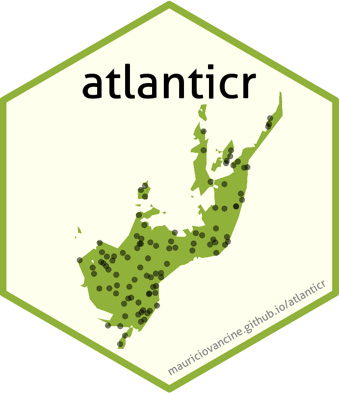

atlanticr
Pacote R para acessar dados do ATLANTIC Series, um conjunto de data papers sobre biodiversidade e dados geoespaciais da Mata Atlântica
By Maurício Vancine in Projetos
September 9, 2023
atlanticr 
Instalação
O pacote pode ser instalado diretamente do github:
# install.packages("remotes")
remotes::install_github("mauriciovancine/atlanticr")
Datasets
Vertebrados
-
atlantic_amphibiansATLANTIC AMPHIBIANS: a data set of amphibian communities from the Atlantic Forests of South America -
atlantic_batsATLANTIC BATS: a data set of bat communities from the Atlantic Forests of South America -
atlantic_birdsATLANTIC BIRDS: a data set of bird species from the Brazilian Atlantic Forest -
atlantic_camtrapsATLANTIC-CAMTRAPS: a dataset of medium and large terrestrial mammal communities in the Atlantic Forest of South America -
camera_trap_surveysCamera trap surveys of Atlantic Forest mammals: A data set for analyses considering imperfect detection (2004–2020) -
atlantic_mammalsATLANTIC MAMMALS: a data set of assemblages of medium- and large-sized mammals of the Atlantic Forest of South America -
atlantic_nonvolant_mammalsNon-volant mammals from the Upper Paraná River Basin: a data set from a critical region for conservation in Brazil -
atlantic_primatesATLANTIC-PRIMATES: a dataset of communities and occurrences of primates in the Atlantic Forests of South America -
atlantic_small_mammalAtlantic small-mammal: a dataset of communities of rodents and marsupials of the Atlantic forests of South America -
atlantic_small_mammal_abundanceAbundance of small mammals in the Atlantic Forest (ASMAF): a data set for analyzing tropical community patterns
Vertebrados - atributos funcionais
-
atlantic_amphibian_traitsATLANTIC AMPHIBIAN TRAITS: a data set of morphological and ecological traits of amphibians in the Atlantic Forest of South America -
atlantic_bird_traitsATLANTIC BIRD TRAITS: a data set of bird morphological traits from the Atlantic forests of South America -
atlantic_mammal_traitsATLANTIC MAMMAL TRAITS: a data set of morphological traits of mammals in the Atlantic Forest of South America
Invertebrados
-
atlantic_antsATLANTIC ANTS: a data set of ant communities from the Atlantic Forests of South America -
atlantic_butterfliesAtlantic butterflies: a data set of fruit-feeding butterfly communities from the Atlantic forests
Interação animais-plantas
-
atlantic_frugivoryAtlantic frugivory: a plant–frugivore interaction data set for the Atlantic Forest -
atlantic_pollinationATLANTIC POLLINATION: a data set of flowers and interaction with nectar-feeding vertebrates from the Atlantic Forest -
atlantic_flower_invertebrate_interactionsAtlantic flower–invertebrate interactions: A data set of occurrence and frequency of floral visits
Plantas
-
atlantic_epiphytesATLANTIC EPIPHYTES: a data set of vascular and non-vascular epiphyte plants and lichens from the Atlantic Forest
Espacial
-
atlantic_spatialATLANTIC SPATIAL: a dataset of landscape, topographic, hydrologic and anthropogenic metrics for the Atlantic Forest
- Posted on:
- September 9, 2023
- Length:
- 2 minute read, 362 words
- Categories:
- Projetos